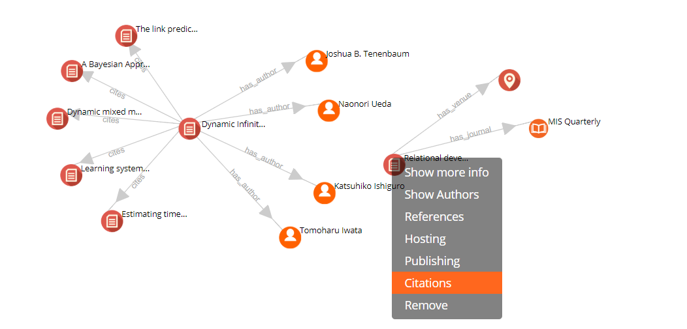
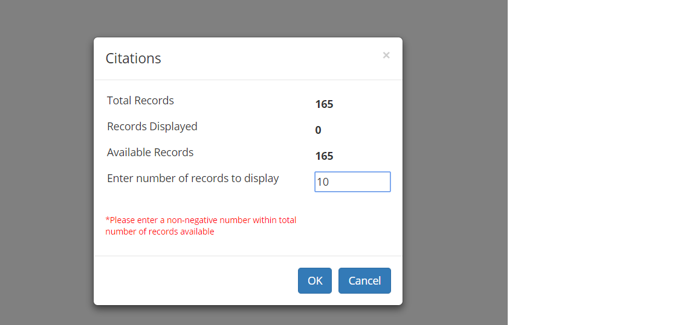
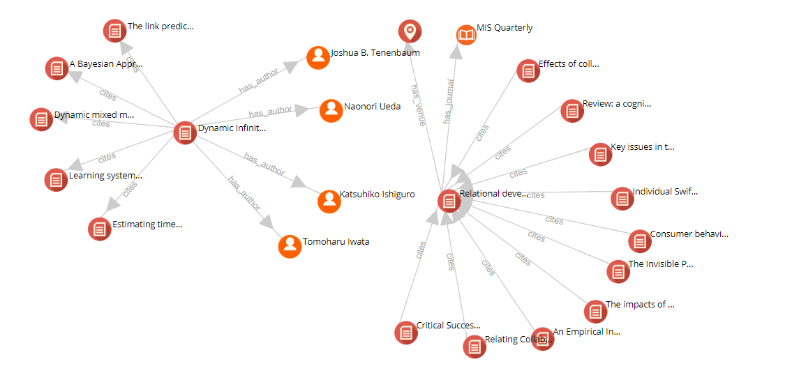
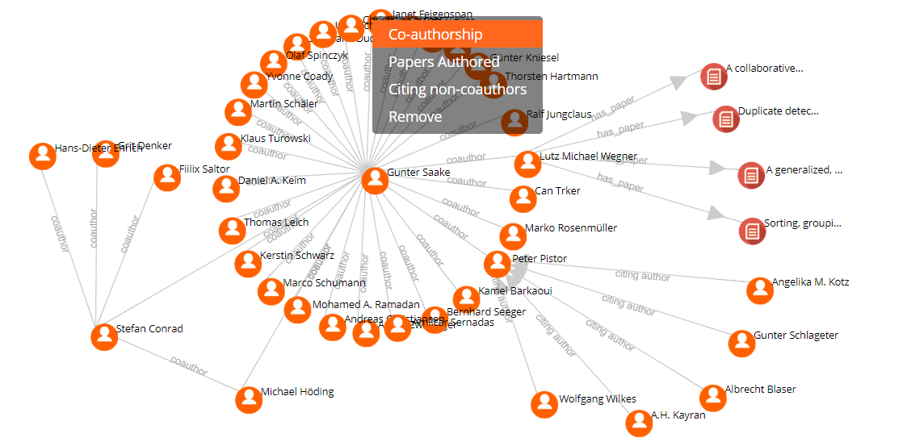
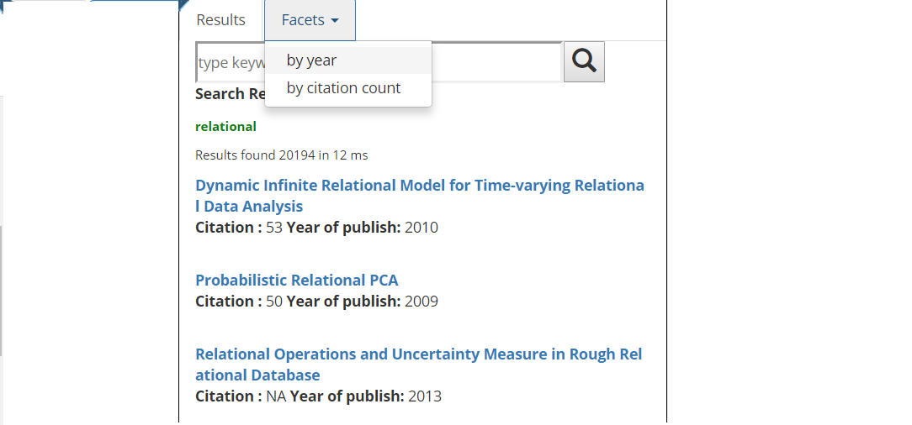
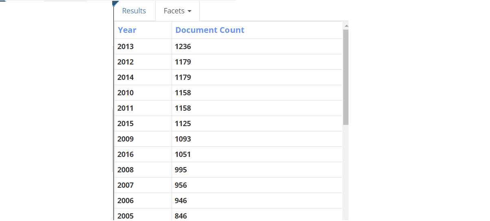
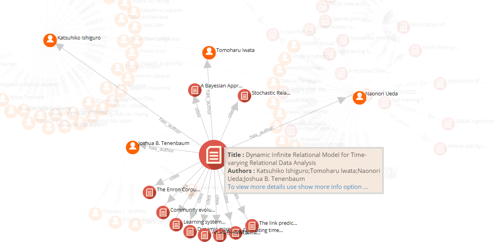

Navigation from Publication to it's Authors, Journal, References and Citations

Provides the ability to limit the record of the result to be displayed

Citations of publication "Relation Dev.." for the entered value (10) is displayed

View Co-authors, Cited non-coauthors, Publications and Field of study of an author

Facets by year and Citation count: aggregates the result of searched term based on year and citation count respectively

Facets "by year"

Double click on the respective node highlights its connecting links and nodes
Previous
Next